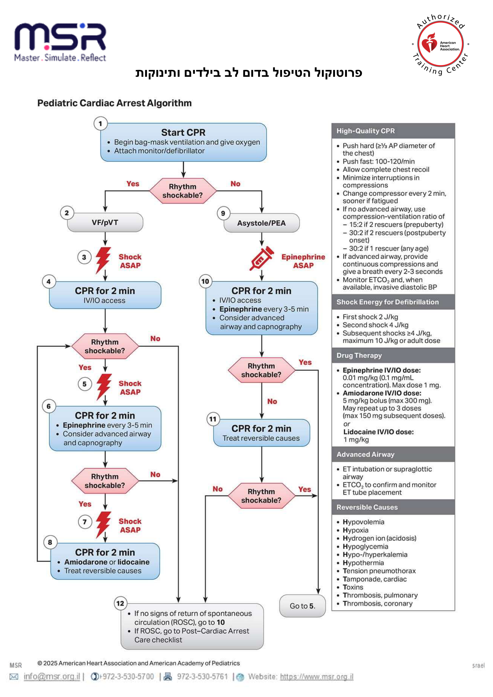

לחצו בכל מקום לסגירה · click anywhere to close
האלגוריתם · ניתן לשוק מול לא ניתן לשוק · אנרגיות ותרופות · סיבות הפיכות
The algorithm · shockable vs non-shockable · energies & drugs · reversible causes
דמות: פרוטוקול MSR / AHA PALS 2025 (Pediatric Cardiac Arrest Algorithm).
בכל המקצבים: CPR איכותי, מזעור הפסקות, נתיב אוויר מתקדם וקפנוגרפיה לפי הצורך.
For all rhythms: high-quality CPR, minimal interruptions, advanced airway & capnography as needed.

| פריט | מינון |
|---|---|
| דפיברילציה | ראשון 2 ג'אול/ק"ג · שני 4 ג'אול/ק"ג · המשך ≥4 (מקס' 10 / מינון מבוגר) |
| Epinephrine (IV/IO) | 0.01 מ"ג/ק"ג (0.1 מ"ל/ק"ג של 1:10,000), מקס' 1 מ"ג, כל 3–5 דק' |
| Amiodarone (IV/IO) | 5 מ"ג/ק"ג בולוס בדום לב; חזרה עד פעמיים ל-VF/pVT עמיד (מקס' 300 מ"ג למנה) |
| Lidocaine (IV/IO) | 1 מ"ג/ק"ג |
CPR איכותי: קצב 100–120, עומק ⅓ מבית החזה, חזרה מלאה, מזעור הפסקות, הימנעות מאוורור-יתר.
| Item | Dose |
|---|---|
| Defibrillation | First 2 J/kg · second 4 J/kg · subsequent ≥4 (max 10 / adult dose) |
| Epinephrine (IV/IO) | 0.01 mg/kg (0.1 mL/kg of 1:10,000), max 1 mg, q3–5 min |
| Amiodarone (IV/IO) | 5 mg/kg bolus in arrest; may repeat up to 2× for refractory VF/pVT (max 300 mg/dose) |
| Lidocaine (IV/IO) | 1 mg/kg |
High-quality CPR: rate 100–120, depth ⅓ AP, full recoil, minimal interruptions, avoid over-ventilation.
חיפוש וטיפול בסיבות הפיכות הוא לעיתים ההבדל בין ROSC לבין המשך דום לב.
Finding and treating reversible causes is often the difference between ROSC and ongoing arrest.